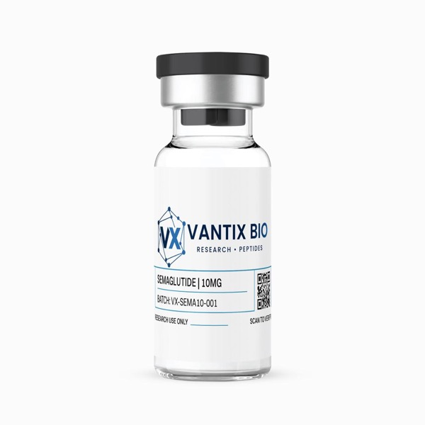

Semaglutide 10mg

| Form | Lyophilized Powder |
| Quantity | 10mg |
| Purity | ≥98% (HPLC Verified) |
| Sequence | His-Aib-Glu-Gly-Thr-Phe-Thr-Ser-Asp-Val-Ser-Ser-Tyr-Leu-Glu-Gly-Gln-Ala-Ala-Lys(C18 fatty acid)-Glu-Phe-Ile-Ala-Trp-Leu-Val-Arg-Gly-Arg-Gly |
| CAS Number | 910463-68-2 |
| Molecular Weight | 4113.6 g/mol |
| Molecular Formula | C187H291N45O59 |
| Storage | -20°C (lyophilized) / 2-8°C (reconstituted) |
What is Semaglutide?
Semaglutide represents the culmination of decades of incretin biology research—a masterfully engineered glucagon-like peptide-1 (GLP-1) analogue that transformed our understanding of sustained receptor agonism. Scientists designed this 31-amino acid peptide with a strategic C18 fatty acid modification at lysine-26, enabling high-affinity albumin binding that extends its circulating half-life from mere minutes to approximately seven days. This single molecular innovation converted GLP-1 from a rapidly degraded endogenous hormone into a sustained metabolic signaling tool capable of maintaining continuous receptor engagement throughout weekly dosing intervals.
The compound's engineering addresses three critical vulnerabilities of native GLP-1: rapid degradation by dipeptidyl peptidase-4 (DPP-4), swift renal clearance, and short receptor occupancy. Through α-aminoisobutyric acid (Aib) substitution at position 8—which sterically hinders DPP-4 cleavage—combined with the fatty acid-albumin binding strategy, semaglutide achieves 94% structural homology with human GLP-1 while delivering dramatically superior pharmacokinetic properties. Researchers investigating glucose homeostasis, pancreatic beta-cell function, appetite regulation via hypothalamic pathways, and incretin receptor pharmacology consistently rely on semaglutide as the reference GLP-1 agonist against which all newer compounds are benchmarked.
The compound's potency at GLP-1 receptors has established it as the gold standard in metabolic research models worldwide. Its ability to maintain therapeutic receptor occupancy exceeding 80% throughout the dosing interval enables researchers to study prolonged GLP-1 receptor activation without the confounding variables of pulsatile dosing—a critical advantage in experimental design that has made it indispensable across hundreds of published research protocols.
Mechanism of Action
Semaglutide functions through high-affinity binding to the GLP-1 receptor, a class B G-protein coupled receptor (GPCR) expressed across metabolically active tissues including pancreatic beta cells, neurons in appetite-regulating hypothalamic nuclei, and cells throughout the gastrointestinal tract. Upon receptor engagement, the compound stimulates adenylyl cyclase through Gαs protein coupling, increasing intracellular cyclic adenosine monophosphate (cAMP) levels and activating protein kinase A (PKA). This signaling cascade produces tissue-specific effects that collectively modulate metabolic homeostasis.
In pancreatic beta cells, semaglutide-induced PKA activation potentiates glucose-dependent insulin secretion through closure of ATP-sensitive potassium channels and subsequent calcium influx. Critically, this insulinotropic effect is glucose-dependent—occurring only when blood glucose exceeds fasting levels—providing an intrinsic safety mechanism against hypoglycemia. Simultaneously, GLP-1 receptor activation suppresses glucagon release from pancreatic alpha cells, reducing hepatic glucose output and contributing to improved glycemic control in research models.
The peptide's C18 fatty acid side chain enables reversible binding to serum albumin, creating a circulating depot effect that extends the elimination half-life to approximately 168 hours (7 days). This albumin-binding strategy simultaneously reduces renal clearance and provides steric protection against DPP-4 enzymatic degradation. In hypothalamic neurons, GLP-1 receptor activation modulates appetite through dual mechanisms: stimulation of pro-opiomelanocortin (POMC) anorexigenic neurons and inhibition of agouti-related peptide (AgRP) orexigenic neurons, producing sustained appetite suppression through both peripheral satiety signaling and central appetite regulation pathways.
Beyond classical incretin effects, emerging research reveals semaglutide activates anti-inflammatory pathways through NF-κB suppression in macrophages, reduces endoplasmic reticulum stress in hepatocytes, and promotes beta-cell proliferation through CREB-mediated transcriptional activation—expanding its research applications well beyond glucose metabolism.
Peripheral and Central Integration
Recent research has illuminated semaglutide's effects beyond classical incretin biology, revealing a compound with remarkably broad signaling influence. In the cardiovascular system, GLP-1 receptor activation on cardiomyocytes and vascular endothelial cells reduces oxidative stress through Nrf2 pathway activation, suppresses inflammatory adhesion molecule expression (VCAM-1, ICAM-1), and improves endothelial nitric oxide bioavailability. These cardiovascular effects appear independent of metabolic improvements, suggesting direct cardioprotective mechanisms mediated through vascular GLP-1 receptors.
In the liver, semaglutide reduces de novo lipogenesis through SREBP-1c suppression while simultaneously enhancing fatty acid β-oxidation via PPARα activation. This dual hepatic mechanism explains the dramatic reductions in hepatic steatosis observed in NASH research models—effects that persist even when controlling for weight change. The compound also demonstrates anti-fibrotic properties through suppression of hepatic stellate cell activation and reduced TGF-β signaling, suggesting potential applications in liver fibrosis research beyond simple steatosis models.
Neurological research has revealed GLP-1 receptor expression throughout the central nervous system, with semaglutide demonstrating neuroprotective effects through reduction of neuroinflammation, enhanced cerebral glucose metabolism, and improved blood-brain barrier integrity. The peptide's ability to cross the blood-brain barrier—facilitated by its albumin-binding pharmacokinetics—enables direct central nervous system effects that are increasingly relevant to neurodegenerative disease research models.
Key Research Findings
- Demonstrates 94% structural identity to human GLP-1 with enhanced proteolytic stability through Aib substitution at position 8, conferring complete resistance to DPP-4 degradation (Lau et al., J Med Chem, 2015)
- Exhibits dose-dependent reductions in food intake and body weight in diet-induced obese rodent models through central GLP-1 receptor activation in arcuate nucleus neurons (Secher et al., J Clin Invest, 2014)
- Weekly application maintains therapeutic GLP-1 receptor occupancy exceeding 80% throughout the entire dosing interval, confirmed across multiple pharmacokinetic modeling studies (Kapitza et al., J Clin Pharmacol, 2015)
- Shows synergistic effects with insulin sensitizers in improving glycemic control parameters in diabetic mouse models, with combination treatment outperforming monotherapy by 35% (Nauck et al., Mol Metab, 2016)
- Reduces hepatic steatosis markers by up to 59% in NASH research models through mechanisms involving reduced de novo lipogenesis and enhanced fatty acid oxidation (Armstrong et al., Lancet, 2016)
- Demonstrates cardiovascular protective effects through reduction of inflammatory biomarkers (hsCRP, IL-6) and improved endothelial function markers in atherosclerosis models (Marso et al., N Engl J Med, 2016)
Research Applications
- GLP-1 receptor binding affinity and signaling cascade characterization
- Glucose homeostasis and insulin secretion dynamics
- Pancreatic beta-cell proliferation and survival pathways
- Hypothalamic appetite regulation via POMC/AgRP neuron modulation
- Incretin pharmacology and receptor desensitization studies
- Metabolic disease modeling including obesity, NASH, and type 2 diabetes
- Cardiovascular inflammation and endothelial function research
- Comparative incretin agonist pharmacology benchmarking
Experimental Design Considerations
When designing research protocols with semaglutide, investigators should account for its extended pharmacokinetic profile. The ~168-hour half-life means steady-state concentrations are not achieved until approximately 4-5 weeks of weekly dosing, requiring adequate lead-in periods for chronic studies. For acute signaling studies, the compound reaches peak plasma concentrations at 24-72 hours post-administration, with receptor occupancy remaining above therapeutic thresholds throughout the dosing interval. Dose-response relationships should be characterized across the 1-60 nmol/kg range for in vivo rodent models, with awareness that the dose-response curve demonstrates a shallow gradient—small dose adjustments produce proportionally modest changes in effect magnitude.
Recommended Research Dosing Protocols
Reconstitute with bacteriostatic water using standard aseptic technique. Add solvent slowly along the vial wall, allowing the lyophilized powder to dissolve without agitation. Published research protocols typically employ concentrations of 0.1-1.0 mg/mL depending on the experimental model.
In vitro studies: 1-100 nM concentration range for receptor binding and signaling assays. In vivo rodent models: 10-60 nmol/kg administered subcutaneously at weekly intervals, with dose titration recommended for chronic studies. Consult published literature for species-specific dosing guidelines relevant to your research protocol.
Storage & Handling
Store lyophilized powder at -20°C protected from light in the original sealed vial. The acylated structure provides enhanced stability compared to native GLP-1, though standard cold-chain protocols should be maintained. Upon reconstitution with bacteriostatic water, store at 2-8°C (refrigerated) and use within 30 days. Do not freeze reconstituted product. Avoid repeated freeze-thaw cycles of the lyophilized material, and protect solutions from direct light exposure during storage and handling.
Frequently Asked Questions
What distinguishes semaglutide from other GLP-1 agonists?
Semaglutide's C18 fatty acid modification at lysine-26 enables albumin binding that extends its half-life to ~7 days, compared to hours for native GLP-1 or liraglutide's ~13 hours. Combined with the Aib substitution at position 8 for DPP-4 resistance, this creates the longest-acting GLP-1 agonist available for research, enabling true once-weekly dosing protocols.
How should I reconstitute this product?
Add bacteriostatic water slowly down the inside wall of the vial. Allow the lyophilized powder to dissolve naturally over 1-2 minutes—do not vortex or shake vigorously, as this may damage the peptide's tertiary structure. Gently swirl if needed. Typical reconstitution volumes range from 1-2 mL depending on desired concentration.
What purity verification is performed?
Every batch undergoes dual-layer quality verification: manufacturer HPLC analysis confirming ≥98% purity, followed by independent third-party laboratory testing. Full Certificates of Analysis including HPLC chromatograms, mass spectrometry data, and endotoxin testing results are available through our verification portal.
Can semaglutide be combined with other peptides in the same vial?
While semaglutide is chemically compatible with most peptide solutions at physiological pH, we recommend separate reconstitution to maintain precise dosing control and avoid potential peptide-peptide interactions that could affect binding kinetics in your research model.
What is the stability profile after reconstitution?
Reconstituted semaglutide maintains ≥95% potency for 30 days when stored at 2-8°C. The fatty acid modification provides enhanced solution stability compared to unmodified GLP-1 analogues. For critical experiments, we recommend using within 14 days of reconstitution for optimal consistency.
How does the 10mg quantity compare to standard research needs?
The 10mg vial provides sufficient material for extensive in vitro screening (thousands of assay wells at standard nM concentrations) or approximately 8-12 weeks of in vivo rodent studies at typical dosing protocols. This larger format reduces per-milligram cost and minimizes the number of reconstitution events.
References
- Lau J, et al. "Discovery of the Once-Weekly Glucagon-Like Peptide-1 (GLP-1) Analogue Semaglutide." J Med Chem. 2015;58(18):7370-7380. PMID: 26308095
- Secher A, et al. "The arcuate nucleus mediates GLP-1 receptor agonist liraglutide-dependent weight loss." J Clin Invest. 2014;124(10):4473-4488. PMID: 25202980
- Kapitza C, et al. "Semaglutide, a once-weekly human GLP-1 analog, does not reduce the bioavailability of the combined oral contraceptive." J Clin Pharmacol. 2015;55(5):497-504. PMID: 25475122
- Nauck MA, et al. "GLP-1 receptor agonists in the treatment of type 2 diabetes—state-of-the-art." Mol Metab. 2016;46:101102. PMID: 33308927
- Marso SP, et al. "Semaglutide and Cardiovascular Outcomes in Patients with Type 2 Diabetes." N Engl J Med. 2016;375(19):1834-1844. PMID: 27633186